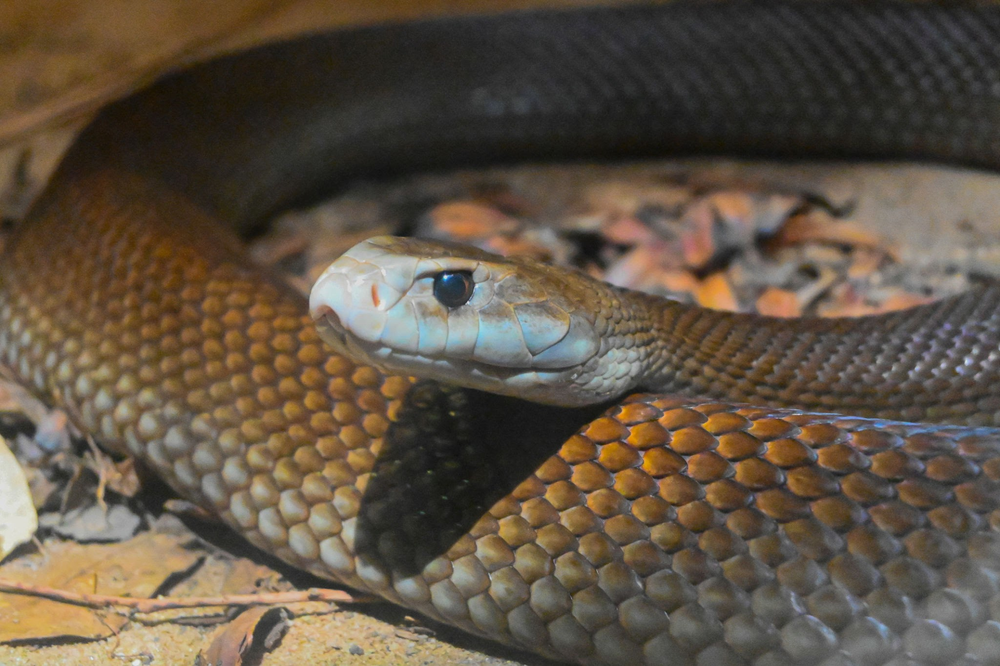

.jpg)
.jpg)
.jpg)
Coastal Taipan
ชื่อวิทยาศาสตร์: Oxyuranus scutellatus
ลักษณะทั่วไป
Coastal Taipan (Oxyuranus scutellatus) เป็นหนึ่งในงูพิษที่มีอันตรายและร้ายแรงที่สุดในโลก โดยติดอันดับงูที่มีพิษร้ายแรงที่สุดเป็นอันดับ 3 ของโลก รองจาก Inland Taipan และ Eastern Brown Snake แต่มักถือเป็นงูที่อันตรายกว่าในแง่ของโอกาสการฉีดพิษ เนื่องจากมีความก้าวร้าวและว่องไวมากกว่า Coastal Taipan จัดเป็นงูพิษที่มีขนาดใหญ่ที่สุดในทวีปออสเตรเลีย และเป็นหนึ่งในงูพิษที่มีสรีระปราดเปรียวและเอื้อต่อการล่าเหยื่อมากที่สุด โตเต็มวัยทั่วไปจะมีความยาวเฉลี่ยอยู่ที่ 1.5 ถึง 2.0 เมตร อย่างไรก็ตาม สถิติของตัวที่มีขนาดใหญ่เป็นพิเศษสามารถยาวได้ถึง 2.9 เมตร และมีรายงานที่ไม่เป็นทางการว่าอาจพบตัวที่มีความยาวแตะ 3.3 เมตร แม้จะมีลำตัวยาวมาก แต่น้ำหนักตัวกลับค่อนข้างเบาเมื่อเทียบกับความยาว โดยทั่วไปจะมีน้ำหนักอยู่ที่ 1.5 ถึง 3.0 กิโลกรัม เนื่องจากมีโครงสร้างร่างกายที่เพรียวยาว ไม่ได้หนาอ้วนเหมือนงูในกลุ่มงูแมวเซาหรืองูหลาม ตัวผู้มักจะมีขนาดเฉลี่ยใหญ่และยาวกว่าตัวเมียเล็กน้อย ซึ่งแตกต่างจากงูหลายชนิดที่ตัวเมียมักมีขนาดใหญ่กว่า ส่วนหัวมีเอกลักษณ์เด่นชัด โดยมีลักษณะยาว ทรงเหลี่ยม แบนเรียบด้านบน และตัดข้างอย่างเห็นได้ชัด จนมักถูกเปรียบเทียบว่ามีรูปร่างคล้าย "ฝาโลงศพ" (Coffin-shaped head) บริเวณคอมีความกิ่วคอดอย่างชัดเจน แยกส่วนหัวออกจากลำตัวอย่างเห็นได้ชัด หัวที่ยาวและคอที่แคบนี้ช่วยให้งูสามารถพุ่งฉกเหยื่อได้อย่างรวดเร็วและยืดหยุ่น ดวงตามีขนาดใหญ่และโดดเด่น ม่านตา (Pupil) เป็นทรงกลม ตัวรูม่านตามักมีสีส้ม หรือสีน้ำตาลสว่างตัดกับขอบตา ทำให้มันมีสายตาที่แหลมคม สามารถตรวจจับการเคลื่อนไหวในระยะไกลได้ดีเยี่ยมต่างจากงูพิษหลายชนิดที่สายตาไม่ดีนัก ส่วนปลายจมูกและบริเวณปากด้านล่างมักมีโทนสีสว่างกว่าส่วนอื่นของหัว โดยมักเป็นสีขาว ครีม หรือสีเหลืองอ่อน ลำตัวยาว เรียว เพรียวบาง และมีความสมดุลสูงตลอดทั้งตัว (Cylindrical and Slender) ไม่ดูล่ำหรือเทอะทะ โครงสร้างนี้เอื้อให้มันเป็นงูที่เลื้อยได้รวดเร็วที่สุดชนิดหนึ่งในโลก เกล็ดลำตัวด้านบน (Dorsal scales) มีลักษณะเรียบเนียน แต่มักจะเรียงตัวกันอย่างเป็นระเบียบ โดยมีจำนวนเกล็ดกลางลำตัวประมาณ 21–23 แถว เกล็ดบริเวณส่วนคอและหลังตอนบนอาจมีรอยนูนเล็กน้อย (Keeled scales) ในบางตัว สีผิวค่อนข้างหลากหลาย ตั้งแต่สีน้ำตาลเหลือง สีน้ำตาลทอง สีน้ำตาลเข้ม สีทองแดง ไปจนถึงสีเทาดำหรือสีน้ำตาลอมส้ม สามารถเปลี่ยนแปลงเล็กน้อยตามฤดูกาล โดยในฤดูหนาวสีผิวจะเข้มขึ้นเพื่อช่วยดูดซับความร้อนจากแสงอาทิตย์ และจะเปลี่ยนเป็นสีสว่างขึ้นในฤดูร้อน เกล็ดใต้ท้องมีสีครีม สีขาว หรือสีเหลืองอ่อน มักปรากฏจุดหรือแต้มสีส้มหรือสีชมพูประปรายอยู่ตามเกล็ดใต้ท้องตลอดช่วงลำตัว Coastal Taipan เป็นงูพิษสายล่าที่มีประสาทสัมผัสฉับไว สัญชาตญาณการป้องกันตัวสูง และมีรูปแบบการล่าเหยื่อที่ดุดันและมีประสิทธิภาพ
- สัตว์ฟันแทะขนาดเล็กถึงปานกลาง เช่น หนูพุก, หนูนา, และหนูบ้าน (Rats and Mice)
- สัตว์เลี้ยงลูกด้วยนมขนาดเล็กในท้องถิ่น เช่น Bandicoots และสัตว์ตระกูลจิงโจ้ ขนาดเล็ก
- นกที่หาอาหารตามพื้นดิน
-
เนื่องจากอาหารโปรดของมันคือหนู ทำให้มันชอบเข้ามาอยู่อาศัยใกล้กับพื้นที่เกษตรกรรมของมนุษย์
โดยเฉพาะ ไร่อ้อย (Sugar cane fields) และฟาร์มเลี้ยงสัตว์ ซึ่งเป็นแหล่งที่มีหนูชุกชุม ตัวของมันจึงช่วยควบคุมประชากรหนูในธรรมชาติได้อย่างดี
- ช่วงเวลาหากิน (Diurnal Activity):
- การใช้ประสาทสัมผัส:
- ความว่องไวและปราดเปรียว: เคลื่อนที่ได้รวดเร็วมาก เมื่อตื่นตกใจหรือออกล่า มันสามารถเลื้อยหนีหรือพุ่งตัวได้อย่างรวดเร็วจนตาเปล่ามองตามแทบไม่ทัน
เป็นงูที่ออกหากินใน เวลากลางวัน เป็นหลัก โดยเฉพาะช่วงเช้าตรู่และช่วงบ่ายแก่ๆ ที่อากาศไม่ร้อนจัด
ในช่วงที่อากาศร้อนจัดในฤดูร้อน มันอาจปรับเปลี่ยนพฤติกรรมมาออกหากินช่วงค่ำหรือเวลากลางคืนแทน
เป็นงูที่มี สายตาดีเยี่ยม สามารถตรวจจับการเคลื่อนไหวจากระยะไกลได้ดีกว่างูชนิดอื่นมาก
ใช้ลิ้นสองแฉกในการรับกลิ่น และยกหัวขึ้นสูงจากพื้น (Scenting/Sensing) เพื่อสแกนหาตำแหน่งของเหยื่อหรือสิ่งคุกคาม
กลยุทธ์การล่าของ Coastal Taipan ถือเป็นเอกลักษณ์เฉพาะตัวที่เรียกว่า "Strike-and-Release" (ฉกแล้วปล่อย) โดยเมื่อสะกดรอยตามเหยื่อจนเจอ มันจะพุ่งเข้ากัดแล้วปล่อยเหยื่อให้วิ่งไปตาย ป้องกันเหยื่อสู้กลับ แล้วตามไปเก็บงานต่อภายหลัง โดยธรรมชาติแล้ว Coastal Taipan ไม่ใช่งูที่วิ่งเข้าทำร้ายมนุษย์ก่อน มันมักจะพยายามเลื้อยหนีเมื่อเจอคน แต่หากถูกต้อนจนมุม ขู่ขวัญ หรือเหยียบโดยไม่ตั้งใจ มันจะกลายเป็นงูที่ก้าวร้าวและอันตรายที่สุดชนิดหนึ่งทันที เมื่อรู้สึกถูกคุกคาม มันจะยกลำตัวส่วนหน้าขึ้นจากพื้น สบตาคู่ต่อสู้ และโก่งคอเป็นรูปตัว "S" พร้อมกับแบนคอลงเล็กน้อยเพื่อขู่ หากผู้คุกคามไม่ถอยออกไป มันจะพุ่งฉกเข้าหาอย่างรวดเร็วและทุ่มแรงทั้งตัว โดยสามารถพุ่งฉกได้ไกลเกือบครึ่งหนึ่งของความยาวลำตัว และมักจะฉกซ้ำๆ หลายครั้งในเหตุการณ์เดียว
ถิ่นอาศัย พิษ และความอันตราย
- ถิ่นอาศัย: Coastal Taipan มีภูมิศาสตร์การกระจายพันธุ์และลักษณะถิ่นอาศัยเฉพาะตัวที่สะท้อนถึงชื่อ "ชายฝั่ง" ของมัน โดยชอบอาศัยอยู่ในพื้นที่เขตร้อนและอบอุ่นที่มีความชื้นสูง รายละเอียดเชิงลึกมีดังนี้
- ทวีปออสเตรเลีย (Oxyuranus scutellatus scutellatus):
- รัฐควีนส์แลนด์: เป็นพื้นที่พบเจอกลุ่มประชากรหนาแน่นที่สุด ตั้งแต่คาบสมุทรเคปยอร์ก (Cape York Peninsula) ทางตอนเหนือ ลัดเลาะตามแนวชายฝั่งตะวันออกลงมาเรื่อยๆ
- นอร์เทิร์นเทร์ริทอรี: พบได้ทางตอนเหนือสุดของเขตTop End รวมถึงพื้นที่เขตร้อนชื้นใกล้มหาสมุทร
- รัฐนิวเซาท์เวลส์: กระจายตัวลงมาทางทิศใต้สุดถึงบริเวณตอนเหนือของรัฐ (แถบเมือง Grafton)
- รัฐออสเตรเลียตะวันตก: พบได้ประปรายบริเวณขอบชายฝั่งตอนเหนือสุด (เขต Kimberley)
- เกาะนิวกินี (Oxyuranus scutellatus canni หรือ Papuan Taipan):
- พบกระจายตัวอยู่ทางตอนใต้ของเกาะนิวกินี โดยเฉพาะในประเทศปาปัวนิวกินี และบางส่วนของปาปัว ประเทศอินโดนีเซีย
- สภาพป่าธรรมชาติ:
- ป่ามรสุมเขตร้อน (Monsoon forests) และป่าฝนชื้น
- ป่าเปิด และป่าละเมาะสเกลอโรฟิลล์ (Sclerophyll forests/Woodlands)
- ทุ่งหญ้าสะวันนาและชายป่าเขตร้อน
- พื้นที่ดัดแปลงโดยมนุษย์ (Human-Modified Habitats):
- ไร่อ้อย (Sugarcane plantations): เป็นถิ่นอาศัยยอดนิยมอย่างยิ่ง เนื่องจากกออ้อยมีความชื้น ร่มเงา และเป็นแหล่งรวมของหนูพุกกับหนูนาจำนวนมาก
- พื้นที่เกษตรกรรม ทุ่งหญ้าเลี้ยงสัตว์ และแปลงปลูกพืช
- บริเวณขอบชุมชน กองขยะเก่า หรือที่รกร้างใกล้ตัวเมือง
- โพรงสัตว์เก่าที่ทอดทิ้งแล้ว (เช่น โพรงหนู หรือสัตว์เลี้ยงลูกด้วยนมขนาดเล็ก)
- ขอนไม้ผุและท่อนไม้กลวงตามพื้นป่า
- กองเศษใบไม้แห้ง เศษวัชพืช หินซ้อนกัน หรือกองไม้ในพื้นที่เกษตรกรรม
- พิษ:
Coastal Taipan เป็นงูพิษที่มีพิษร้ายแรงที่สุดเป็นอันดับ 3 ของโลก โดยพิษของมันถูกออกแบบมาเพื่อหยุดยั้งระบบการทำงานของร่างกายเหยื่อขนาดเล็กให้เป็นอัมพาตและเสียชีวิตอย่างรวดเร็วเพื่อไม่ให้เหยื่อต่อสู้กลับได้
1. รูปแบบและประเภทของพิษ (Venom Composition)
- Neurotoxic (พิษทำลายระบบประสาท):
- เป็นฤทธิ์หลักที่รุนแรงที่สุด โดยเฉพาะสาร Taipoxin ซึ่งเป็น Presynaptic Neurotoxin ที่มีฤทธิ์ยับยั้งการปลดปล่อยสารสื่อประสาทอย่างรุนแรงและถาวร ทำให้เส้นประสาทไม่สามารถส่งสัญญาณสั่งการไปยังกล้ามเนื้อได้
- Procoagulant (พิษที่ทำให้เลือดแข็งตัวผิดปกติ):
- มีเอนไซม์กระตุ้นให้เกิดการแข็งตัวของเลือดอย่างรวดเร็วในกระแสเลือด ส่งผลให้ไฟบรินในเลือดถูกใช้จนหมดสิ้น นำไปสู่ภาวะ Consumptive Coagulopathy หรือภาวะเลือดไม่แข็งตัว ทำให้เลือดไหลไม่หยุดตามอวัยวะต่างๆ
- Myotoxics (พิษทำลายเนื้อเยื่อกล้ามเนื้อ):
- ทำลายเซลล์กล้ามเนื้อลาย ส่งผลให้กล้ามเนื้อสลายตัว (Rhabdomyolysis) และปล่อยสารไมโอโกลบินเข้าสู่กระแสเลือด ซึ่งส่งผลเสียโดยตรงต่อไต
- Nephrotoxic (พิษทำลายไต):
- เกิดขึ้นทั้งจากฤทธิ์ของพิษโดยตรง และผลกระทบสืบเนื่องจากกล้ามเนื้อสลายตัวจนเกิดภาวะไตวายเฉียบพลัน
พิษของ Coastal Taipan เป็นส่วนผสมของสารชีวโมเลกุลเข้มข้น มีฤทธิ์ทำลายระบบสำคัญของร่างกายพร้อมกันหลายส่วน:
2. ลำดับอาการหลังถูกกัด (Clinical Progression)
- ระยะแรก (0 – 30 นาทีหลังถูกกัด)
- รอยแผล: อาจพบรอยเขี้ยว 1–2 รอย หรือมากกว่านั้นเนื่องจากการฉกซ้ำ รอยแผลอาจไม่ได้เจ็บปวดรุนแรงเหมือนถูกงูแมวเซากัด และมักไม่มีอาการบวมแดงมากนัก
- อาการทั่วไป: เวียนศีรษะ ปวดศีรษะอย่างรุนแรง คลื่นไส้ อาเจียน ปวดท้อง และเหงื่อออกมาก
- ความดันโลหิต: มีภาวะความดันโลหิตตกอย่างรวดเร็ว หัวใจเต้นเร็วหรือเต้นผิดจังหวะ และอาจเป็นลมหมดสติได้ตั้งแต่ช่วงแรก
- ระยะกลาง (30 นาที – 2 ชั่วโมงหลังถูกกัด)
- เลือดออกผิดปกติ: เลือดไหลไม่หยุดจากแผลที่ถูกกัด, เลือดออกตามไรฟัน, รอยเขียวช้ำตามผิวหนัง หรือปัสสาวะมีเลือดปน
- หนังตาตก (Ptosis) มองภาพซ้อน พูดไม่ชัด กลืนลำบาก (สัญญาณประสาทถูกทำลาย)
- ระยะรุนแรง (มากกว่า 1–2 ชั่วโมงขึ้นไป)
- ภาวะช็อกและไตวาย: ความดันโลหิตล้มเหลวโดยสิ้นเชิง ไตหยุดทำงานจากภาวะไตวายเฉียบพลัน
- ระบบหายใจล้มเหลว: พิษทำลายระบบประสาทจะลามไปถึงกระบังลมและกล้ามเนื้อยึดซี่โครง ทำให้ผู้ป่วยไม่สามารถหายใจได้เอง (Respiratory Failure) และตายในที่สุด
หากมนุษย์ถูกกัดและไม่ได้รับการรักษาด้วยเซรุ่มเฉพาะทาง อาการจะพัฒนาอย่างรวดเร็วตามลำดับเวลานี้:
1. ขอบเขตการกระจายพันธุ์ทางภูมิศาสตร์ (Geographical Distribution)
สายพันธุ์นี้กระจายตัวเป็นแนวโค้งตามแถบชายฝั่งตอนเหนือและตอนใต้ของภูมิภาค โดยแบ่งออกเป็น 2 ชนิดย่อย (Subspecies) ตามพื้นที่ทางภูมิศาสตร์:
2. สภาพแวดล้อมและถิ่นอาศัย (Habitat Preferences)
Coastal Taipan แตกต่างจาก Inland Taipan ที่อาศัยอยู่ในทะเลทรายแห้งแล้งและรอยแยกดินแห้งกักเก็บน้ำ โดย Coastal Taipan จะต้องการความชื้นและสภาพอากาศที่ไม่หนาวจัด (มักไม่พบในพื้นที่ที่อุณหภูมิฤดูหนาวต่ำกว่า 20°C)
3. ที่หลบซ่อนและรังนอน (Shelter Sites)
เนื่องจากมันไม่ใช่งูที่ขุดรูเอง มันจึงใช้ประโยชน์จากที่ซ่อนธรรมชาติและร่องรอยของสัตว์อื่นในการนอนพักและกักเก็บความชื้น:
Fun Fact
- เปลี่ยนสีตามฤดูกาลได้เหมือนเปลี่ยนเสื้อผ้า: สีผิวของมันจะเข้มขึ้นเป็นสีน้ำตาลเข้มหรือเทาดำในฤดูหนาวเพื่อช่วยดูดซับความร้อนจากแสงแดด และจะค่อยๆ สว่างขึ้นเป็นสีทองแดงหรือสีน้ำตาลส้มในฤดูร้อนเพื่อป้องกันไม่ให้ร่างกายร้อนเกินไป
- เพชรฆาตรไร่อ้อย: ก่อนที่จะมีการผลิตเซรุ่มแก้พิษได้สำเร็จในปี ค.ศ. 1955 ชาวไร่อ้อยในรัฐควีนส์แลนด์กลัวงูชนิดนี้มาก เพราะไร่อ้อยคือถิ่นอาศัยชั้นดีของมัน และหากใครถูกกัดในสมัยนั้น ก็จองศาลาวัดได้ทันที เพราะโอกาสตายคือ 100%
- งูพิษที่มี "เขี้ยว" ยาวที่สุดในออสเตรเลีย: แม้จะจัดอยู่ในกลุ่มงูเขี้ยวหน้า (Elapids) ที่ปกติเขี้ยวจะสั้น แต่เขี้ยวของมันยาวได้ถึง 12–13 มิลลิเมตร ซึ่งยาวพอจะเจาะทะลุรองเท้าหนังหรือกางเกงยีนส์หนาๆ ได้สบาย